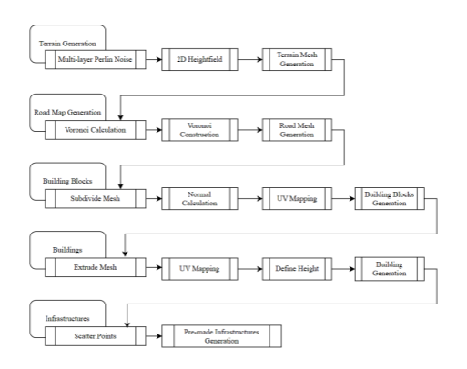
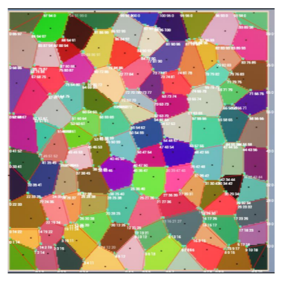
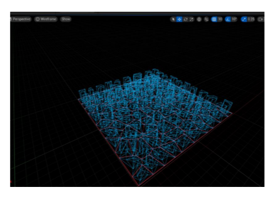
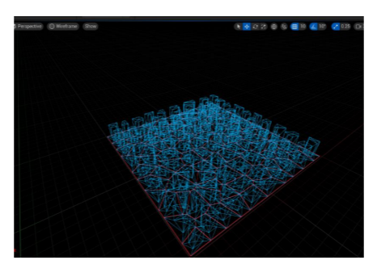

Voronoi Diagram Based City Generator: A Procedural Generation Approach to Create Adjustable City in Games
The idea of making a city generator in game engine comes from one of my internship experience. At that time, we used Houdini as a third party tool to do procedural generation. Which is quite fun, but in my point of view, it's not a real-time tool and it takes too much time to complie the HDA in the game scene. This is not that efficient, then i occasionally read a essay from yolo's author, in that essay he used this voronoi method to do procedural generation for city. So I decided to follow the path and try to implement by myself in Unreal.
Following is the videos about how it works:
The image below is the CORE logic of the whole generating process, it construt a voronoi graph first, then find corner vertices, edges and triangles.
  

I wrote a very detailed essay about how it works, you can check it here.